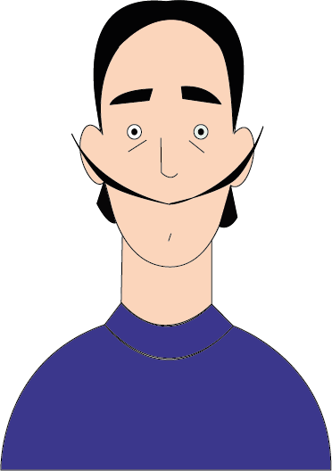
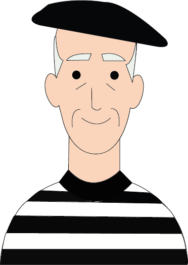
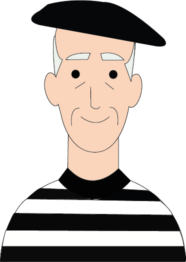
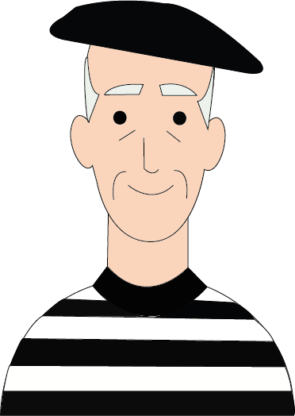

Curiosità d'artista
Siamo soliti considerare i grandi artisti come persone molto lontane da noi, ma è davvero così?
Scopriamo insieme le curiosità e gli aneddoti di coloro che hanno scritto la Storia dell’arte.

 


